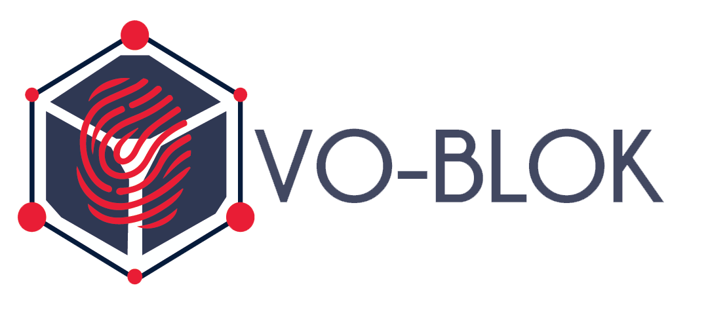

<nav class="navbar navbar-expand-lg navbar-light bg-light py-0">
    <a class="navbar-brand" href="#" style="margin:0px;"></a>
    <button class="navbar-toggler" type="button" data-toggle="collapse" data-target="#navbarNavAltMarkup"
        aria-controls="navbarNavAltMarkup" aria-expanded="false" aria-label="Toggle navigation">
        <span class="navbar-toggler-icon"></span>
    </button>
    <div class="collapse navbar-collapse" id="navbarNavAltMarkup">
        <div class="navbar-nav ml-auto">
            <a class="nav-item nav-link py-4 px-3 active" href="index.php">Home <span
                    class="sr-only">(current)</span></a>
            <a class="nav-item nav-link py-4 px-3" href="contact.php">Contact</a>
            <a class="nav-item nav-link py-4 px-3" href="about.php">About</a>
            <a class="nav-item nav-link py-4 px-3" href="login.php">Login</a>

        </div>
    </div>
</nav>
